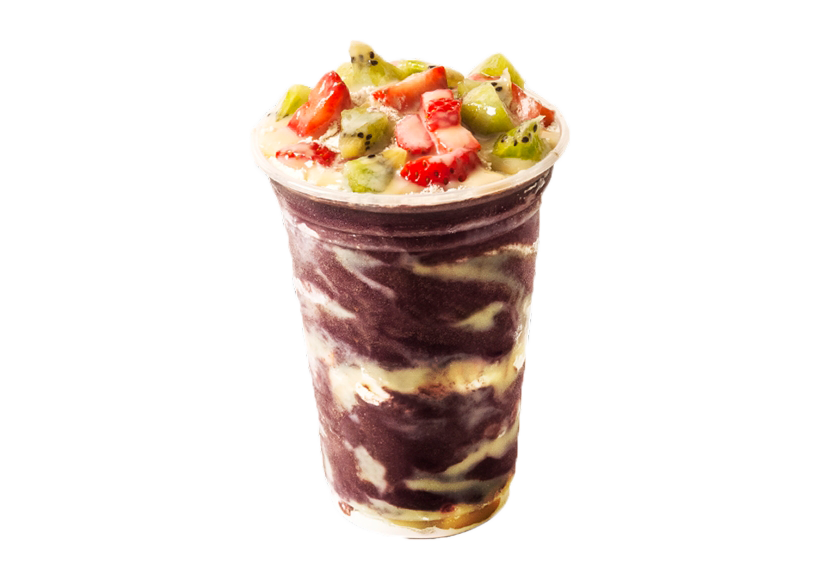

Não é apenas uma Fruta,
é AÇAI
O açaí é um fruto brasileiro cultivado predominantemente na região amazônica. Com cor escura, que vai do roxo ao preto, o fruto arredondado nasce em cachos e, na maioria das vezes, em locais com solos mais úmidos ou alagados.
Mesmo sendo um fruto característico da Região Norte do país, o açaí se popularizou nacionalmente e é utilizado de diversas formas na culinária brasileira, já que possui muitas propriedades nutricionais.
